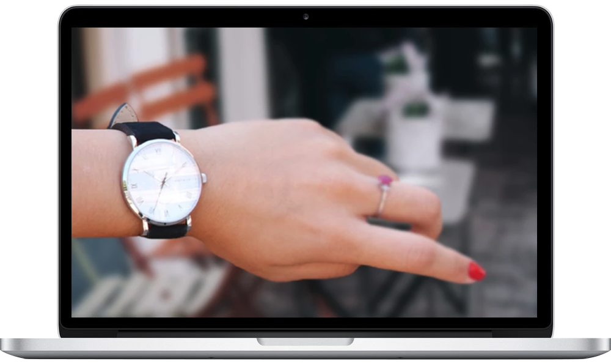

Trestle Watch Company is an American brand founded by a watch lover and history enthusiast. I grew up loving the World War 2 era and combined my love for watches and history. Seeing that most watches based off of that time period were either too clunky-looking or just too out of date and unfashionable, it was simple to me. Create a watch with a vintage feel, yet modern and slim. From that mindset, Trestle Watch Company was born.
In August of 2016, I designed and created a brand of watches. I was able to surpass the funding goal on Kickstarter and brought my project to life.